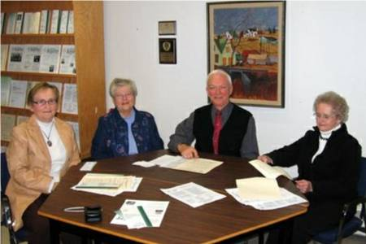

No. 58 (Rev) January 12, 2006
Support for Literacy Lives On
The Rocky Point School has a long and proud history of service to the young people of the area. But times change and, instead of trudging along the road to the local school, students now hop on a bus at the end of their driveway and are whisked to a school elsewhere. And that story is repeated in most small communities throughout rural Canada.
Thanks to the Cumberland-Rocky Point Women’s Institute, however, the tradition of instruction in the three R’s lives on in the form of an endowment that will provide financial support in perpetuity for the advancement of literacy in the elementary schools of the a area.
When no longer needed for classes, the school was purchased by the Rocky-Point Cumberland Women’s Institute as a community hall and meeting place; now the Institute no longer needs it. Money from the sale was used to establish an endowment, The Cumberland-Rocky Point Women’s Institute Legacy Fund, with the Community Foundation of Prince Edward Island. The Foundation will invest the money and make grants annually in support of literacy in the Westwood Primary and Eliot River Elementary Schools, two schools now serving students at the elementary level from the Cumberland – Rocky Point area.

Representatives of the Cumberland-Rocky Point Women’s Institute and the Community Foundation of Prince Edward Island concluded an agreement establishing the Cumberland-Rocky Point Women’s Institute Legacy Fund. From the left: Helen Hogan, Treasurer and Nancy Ibbot, Past President of the Women’s Institute; John Robinson President of CFPEI, and Mary Hogan, President of the WI.
Best wishes from the Editor
May 2007
Bring Peace
And Prosperity
To All
________________________________
The Community Foundation News is an informal newsletter, in electronic form only, edited and published by, and at the whim of, Don Glendenning. Think of it as a letter from a friend. Forward this to others who may be interested. For further information, check our website, www.cfpei.ca or Email me at: dglende@pei.sympatico.ca